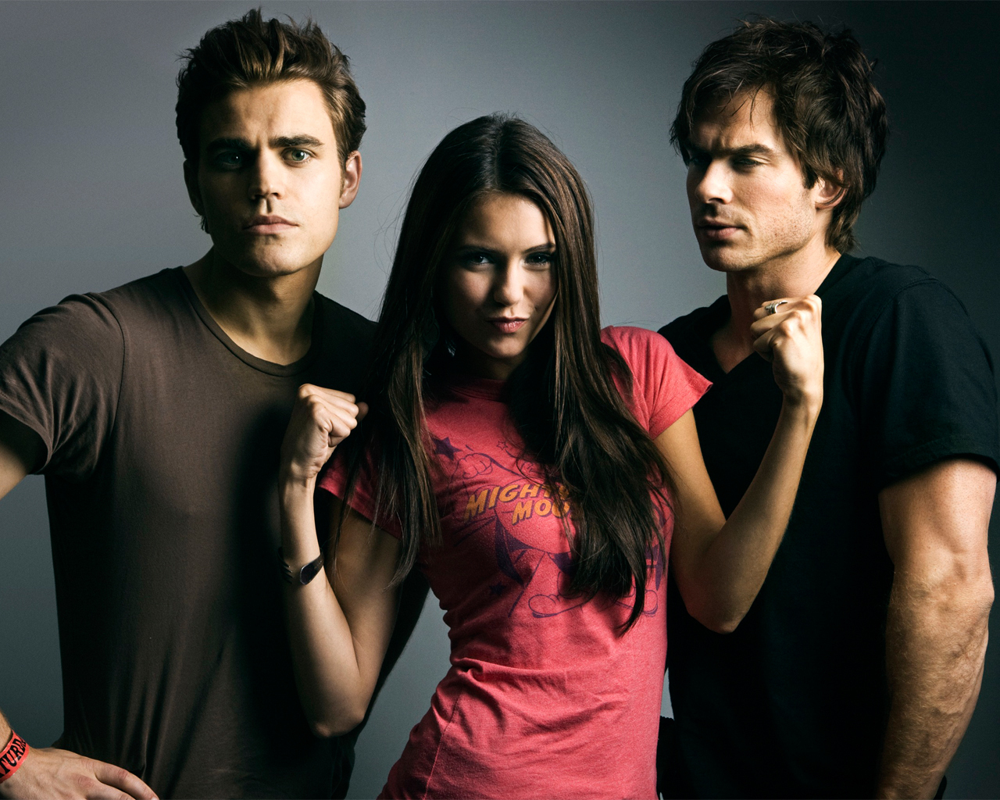
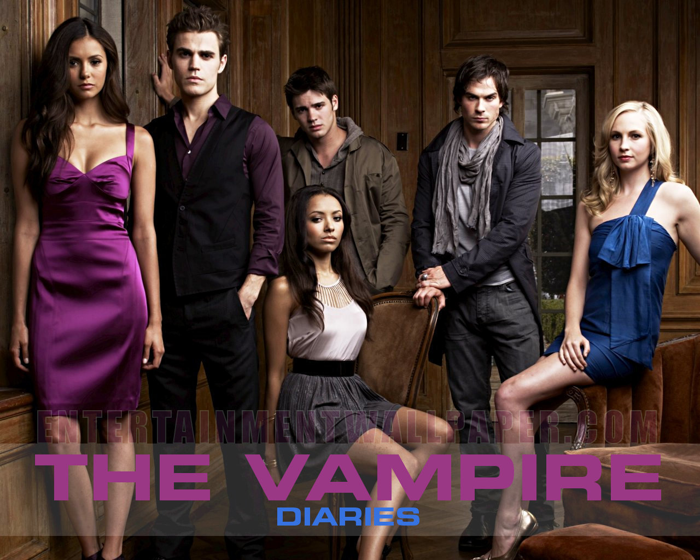
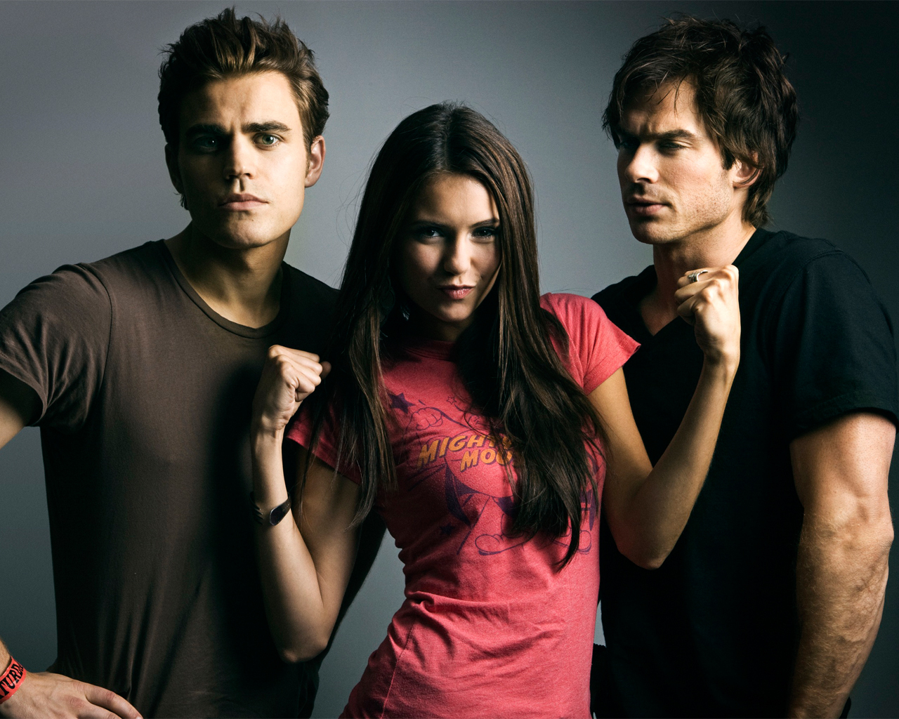
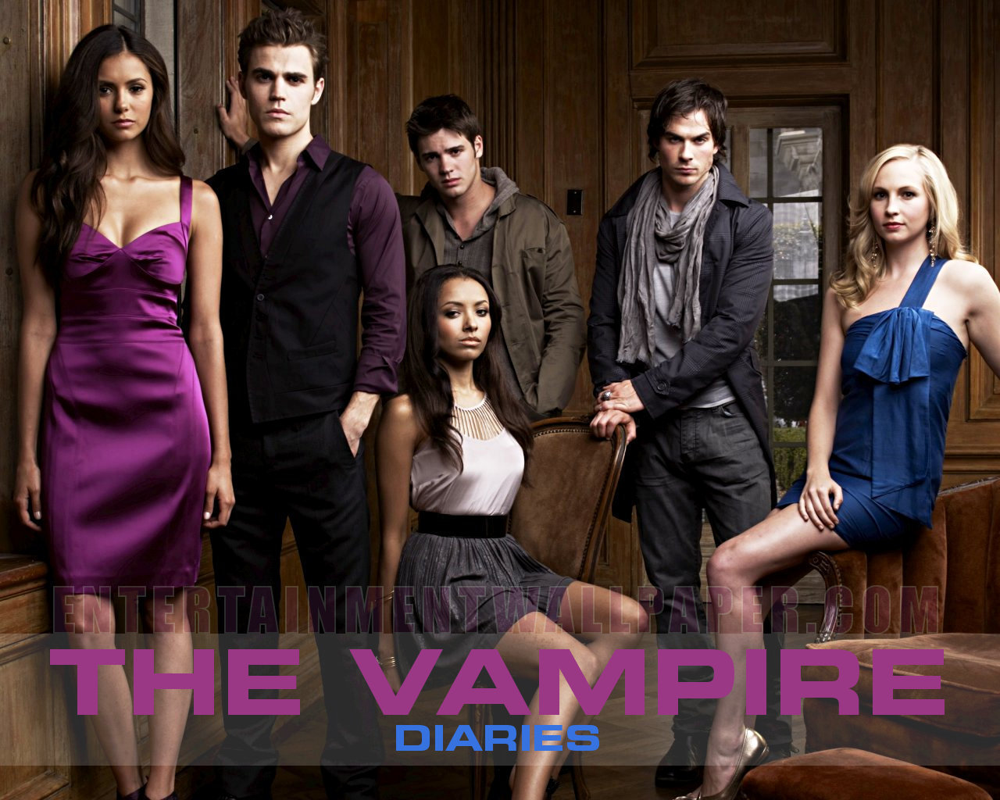

The Vampire Diaries
This Website talks about the show, the actors,actresses and the fans!
 



The series takes place in Mystic Falls, Virginia, a fictional small town haunted by
supernatural beings.The main focus of the series is the love triangle between human Elena Gilbert (Nina Dobrev)
and vampire-brothers Stefan(Paul Wesley) and Damon Salvatore (Ian Somerhalder).The focal pointshifts on the mysterious
past of the towninvolving Elena's malevolent doppelgänger Katherine Pierce (Katerina Petrova), and the family of
Original Vampires.